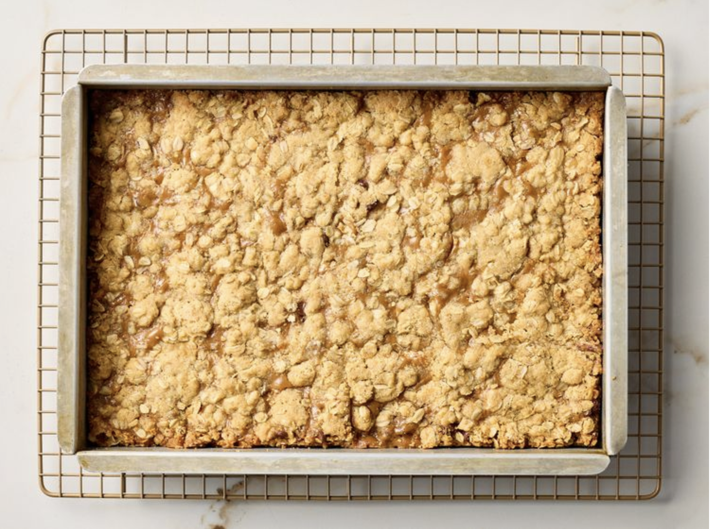

Bar Cookies
Home

Image Credits: AllRecipes
Description
This recipe will yield a tray of bar cookies. It only uses simple ingredients like chocolate chips, brown sugar, and oats.
Ingredients
- 2 cups all-purpose flour
- 2 cups rolled oats
- 1.5 cups brown sugar
- 1.5 tsp salt
- 1 tsp baking soda
- 1.5 cups melted butter
- 2 cups semisweet chocolate chips
- 12 oz caramel ice cream topping
- 6 tbsp all-purpose flour
Steps
- Gather the ingredients. Preheat the oven to 350 degrees F (175 degrees C). Grease a 9x13-inch pan.
- In a large bowl, stir together 2 cups flour, oats, brown sugar, salt, and baking soda. Mix in melted butter until evenly distributed. Press half of the mixture into the bottom of the prepared pan.
- Bake for 10 minutes in the preheated oven, until lightly toasted. Remove from the oven and immediately sprinkle with chocolate chips. Let stand.
- In a small bowl, mix caramel topping with 6 tablespoons of flour; drizzle evenly over the chocolate chips. Sprinkle the remaining crust mixture evenly over the caramel layer and press down lightly.
- Bake for 15 more minutes in the preheated oven. Allow to cool completely before cutting into squares.
Recipe Credits: AllRecipes